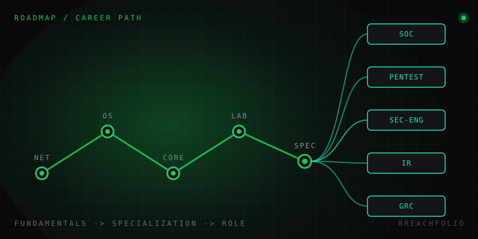

How to start in cybersecurity: the real roadmap, and where it leads.
Skip the "50 free resources" listicles. Here's the order that actually works, the official roadmap.sh path worth following, and the jobs waiting at the other end.
Every beginner asks the same question in the same forum: "I want to get into cybersecurity, where do I start?" And every thread answers with the same scattershot list – watch this YouTube series, do that CTF platform, read this 900-page book, get this certification, learn Python, learn Linux, learn networking, all seemingly in parallel, all seemingly urgent. It's not bad advice exactly. It's just missing the one thing a beginner actually needs: an order.
Cybersecurity is not a single skill you acquire. It's a specialization you build on top of general IT competence, and the single biggest reason people bounce off this field in the first three months isn't that the material is too hard, it's that they tried to learn "hacking" before they understood how a network, an operating system, or a web request actually works. Tools without fundamentals produce someone who can run nmap but can't explain what a three-way handshake is, or why the scan behaved the way it did.
The order that actually works
There is a genuinely useful, free, community-maintained resource for this: roadmap.sh's Cyber Security roadmap. It's not affiliated with Breachfolio – it's an independent, widely-used reference that thousands of self-taught security professionals point back to, and it's worth having open in a tab while you plan the next six months. Stripped down to its core logic, it agrees with almost every experienced practitioner on one point: fundamentals come before offense or defense specialization.
- Networking fundamentals. The OSI model, TCP vs UDP, DNS, HTTP/HTTPS, subnetting, routing. You cannot reason about a firewall rule, a scan result, or a packet capture without this. See our own how networks actually work for the version we'd want a beginner to read first.
- Operating system fundamentals – Linux especially. Most servers, most security tooling, and most CTF challenges run on Linux. The permission model, the process model, and the shell are non-negotiable. Start with Linux fundamentals for security.
- Core security concepts and vocabulary. Threat vs vulnerability vs exploit vs risk, the CIA triad, common attack classes. This is the layer that lets you read an advisory or a CVE description and actually understand what it means – see Cybersecurity 101.
- A first hands-on lab. Reading stops being enough around week four or five. Build a small, isolated home lab and start breaking things safely – our home lab on one laptop guide is designed for exactly this point in the journey.
- Pick a specialization, deliberately. This is where most roadmaps get vague, and where the career section below tries to be specific instead.
A realistic timeline for steps 1-4, studying consistently but not obsessively (an hour or two most days), is three to six months. People who try to compress this into three weeks usually end up re-learning the fundamentals later anyway, once a specialization forces the gaps into the open.

Where the roadmap actually leads: the real job roles
"Cybersecurity" is not one job. It's an umbrella over several genuinely different day-to-day roles, and picking one deliberately – instead of drifting toward whichever is loudest on social media – saves months of misdirected study.
| Role | What you actually do | Learn more |
|---|---|---|
| SOC Analyst Security Operations Center |
Usually the most accessible entry-level role. You monitor alerts, triage them, and escalate real incidents: the job lives inside a SIEM most of the day. | Splunk vs Wazuh vs ELK |
| Penetration Tester Offensive Security |
You're hired to legally attack systems and report what you find. This role rewards the deepest fundamentals – networking and OS knowledge in particular – because you're finding the gaps in both. | – |
| Security Engineer | Builds and maintains the defenses – firewalls, hardening, secure architecture – rather than testing them. Closer to a software/infrastructure engineering background with a security lens. | – |
| Incident Responder | Called in after something has already gone wrong: contain it, figure out what happened, help the organization recover. | First 24 hours of an incident |
| GRC Analyst Governance, Risk & Compliance |
Less technical, more process- and policy-focused – translating regulatory and audit requirements into things the technical teams actually implement. A legitimate, well-paid path for people who prefer structure over troubleshooting. | – |
Certifications map loosely onto these roles rather than to "cybersecurity" in general – a SOC analyst and a penetration tester study for genuinely different exams. We've put together a straight comparison in the most recognized cybersecurity certifications, compared, worth reading once you've picked a lane.
What actually gets you hired at the entry level
Hiring managers for entry-level roles consistently report the same three things move the needle more than a certification alone:
- A documented home lab – even a simple one, written up honestly.
- Participation in CTFs or platforms like TryHackMe/HackTheBox.
- The ability to explain – clearly, out loud – what a threat, a vulnerability, and a risk actually are, and why the difference matters.
A candidate who can do that beats a candidate with a certification and no ability to reason about a scenario, every time.
If you take one thing from this: fundamentals first, specialization second, tools third. The roadmap.sh path and the sequence above agree on that order for a reason – nearly everyone who's actually worked in this field arrived at the same conclusion independently.
Frequently asked questions
What is the right order to learn cybersecurity fundamentals?
What are the main entry-level cybersecurity job roles?
How long does it take to become job-ready in cybersecurity?
What actually gets you hired at the entry level in cybersecurity?
Daniel A. and Óscar S. run Breachfolio, a small independent site about security and AI. This article was drafted with AI assistance and reviewed by a person before it went live. We write from documentation, vendor sources and published research rather than from original lab benchmarks, and we link a source in the sentence that relies on it. How we work · About us